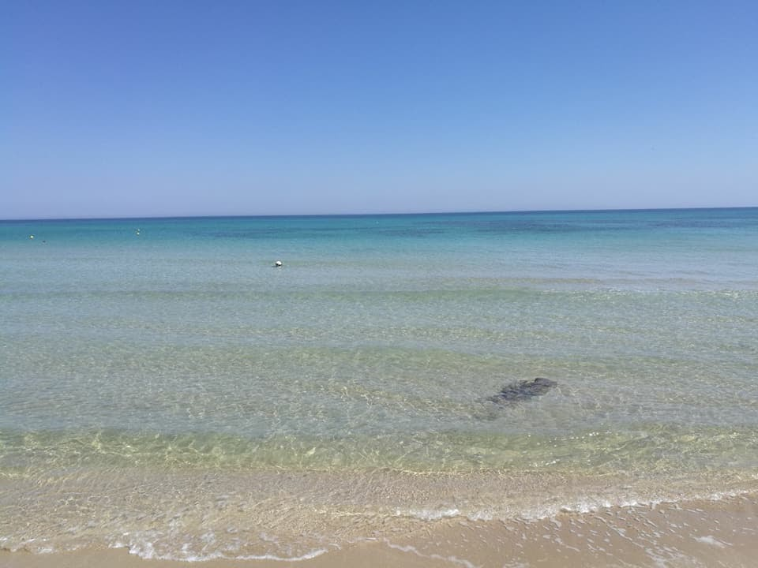
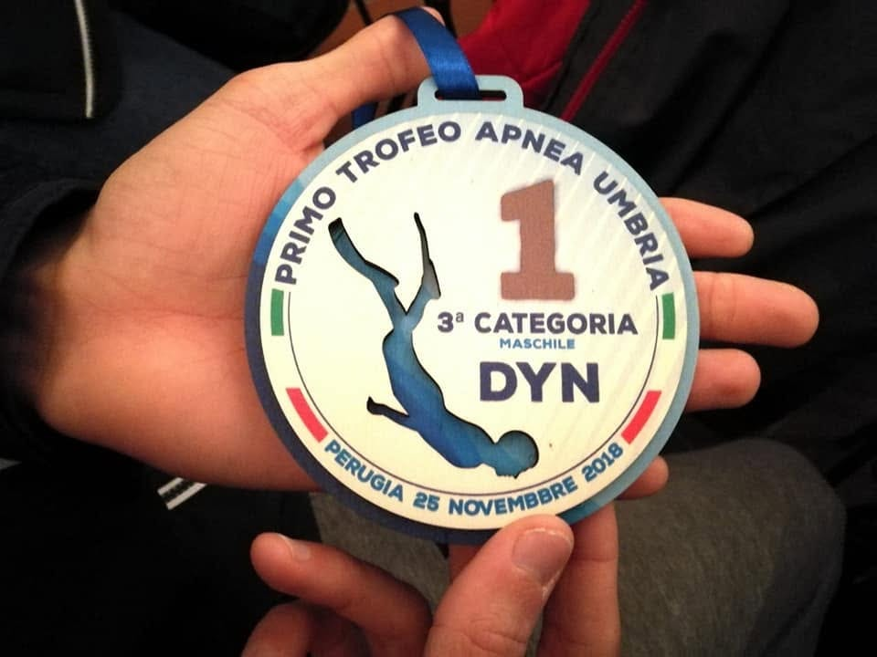
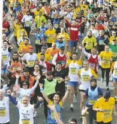
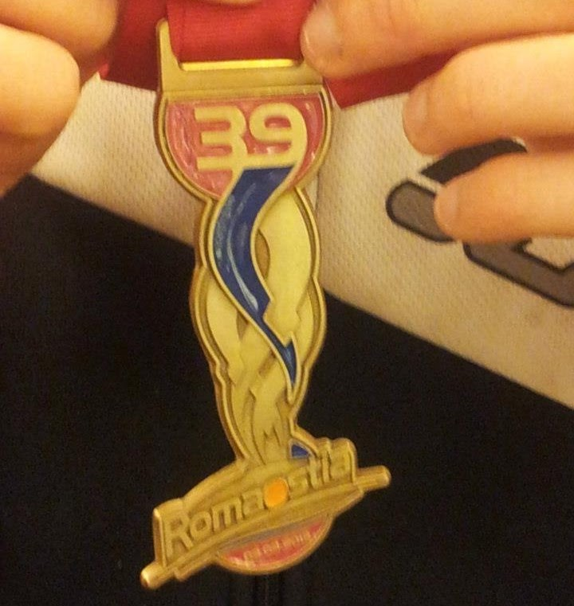

2018 · Fasano, Puglia
La prima gara di apnea.
Tante ore di macchina con mio padre, arrivo il giorno prima, un hotel non troppo costoso. In vasca faccio 50 metri in dinamica e arrivo penultimo: nessun premio, nessuna medaglia.
Ma da quella gara mi porto a casa la cosa che conta: l'ingresso nella categoria successiva.

Perugia · Primo Trofeo Apnea Umbria
Primo posto,
75 metri in vasca.
Gara di qualificazione organizzata dalla FIPSAS: 75 metri con attrezzatura, primo gradino del podio, terza categoria maschile, dinamica.
Dopo la premiazione siamo andati a mangiare tutti insieme, con gli altri partecipanti. Quella è la parte che si ricorda quanto la medaglia.
Palmarès in vasca
- 2017 4ª gara regionale — 50 m e 400 m nuoto pinnato · 1º posto
- 2017-2018 Circuito regionale · ori e argenti
- 2018 Fasano — 50 m dinamica · esordio in apnea
- Perugia Primo Trofeo Apnea Umbria — 75 m DYN · 1º posto
Società: Nuoto Belle Arti · Federazione FIPSAS
2017 · Nuoto pinnato
Ori e argenti
a livello regionale.
Alla quarta gara regionale mi iscrivo ai 50 e ai 400 metri di nuoto pinnato. Arrivo primo ed entro nel circuito delle gare.
Al Nuoto Belle Arti l'apnea era considerata un'attività fra virgolette: così ho gareggiato a livello regionale, portando a casa medaglie d'oro e d'argento.


Corsa · Almaviva Runners
La Miguel, la mezza,
e poi l'ospedale.
La seconda gara della mia vita è la Miguel, 10 km, con il sostegno di mio padre e la maglia dell'Almaviva Runners. Gara impegnativa, ma mi presento carico e allenato. Poi "Aspettando la mezza", all'Università di Tor Vergata.
Infine la Roma-Ostia, la mia prima mezza maratona. Arrivo sfinito: battiti oltre 100 sotto sforzo e sotto i 30 a riposo. Mi ricoverano, holter per un giorno, poi lo Spider. Nessun rischio reale, ma mesi di stop e una labirintite a entrambe le orecchie.
Ricominciare da capo dopo mesi fermo è una gara che non ti premia nessuno. È quella che mi ha insegnato di più.
«Ogni traguardo, con fatica, pazienza e allenamento mentale a non arrendersi mai.»
Federico